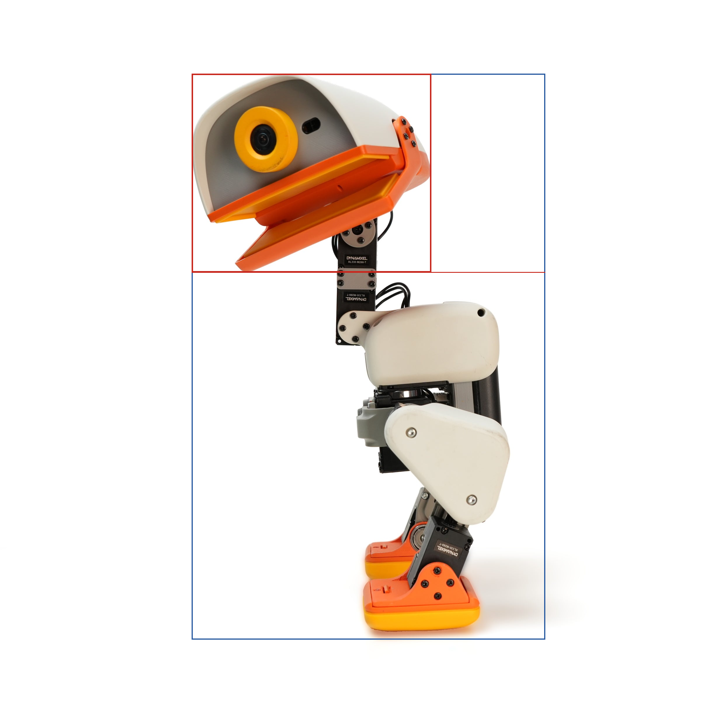
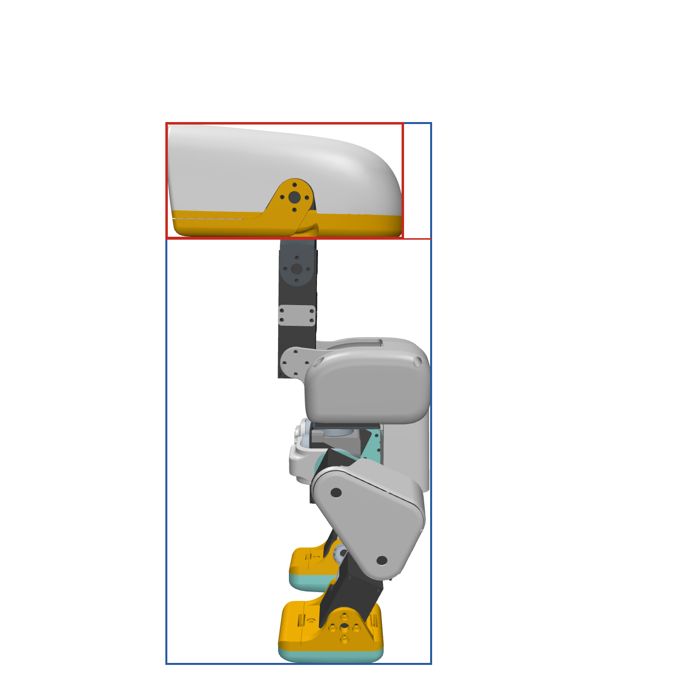

Microduck reverse-engineering · reference conformance
Reference match: our CAD against the real Microduck
Every render of ours sits beside the real product photograph shot from the same camera angle. Below the visual check is the measured dimension table for all 47 mechanical parts, at full precision.
1Verdict — is it the same?
2Whole robot — real beside ours
Four viewpoints for which an official photograph exists. Our camera azimuth and elevation were set to match each photograph; the pose is the model's STAND keyframe with the head levelled.
Left profile
cream colourway, standing · our camera: azimuth 270°, elevation −8°


Right profile
graphite colourway, standing · our camera: azimuth 90°, elevation −8°


Three-quarter front-left
sky colourway, standing · our camera: azimuth 225°, elevation −10°


Three-quarter back-right
graphite colourway, standing · our camera: azimuth 45°, elevation −12°


3Joints — real beside ours
The same posed robot with the camera pushed in on each joint, against the corresponding region of the profile photograph. Posing costs milliseconds — the kinematics are already in the model, so no CAD-kernel rebuild is involved.
Neck — 2× XL330 pitch/roll stack
real robot, same joint (cropped from the profile photograph) · our camera: left profile, matched


Two XL330-M288-T in series above the trunk; the beak assembly hangs off the upper horn.
Hip — yaw / roll / pitch cluster
real robot, same joint (cropped from the profile photograph) · our camera: left profile, matched


Three orthogonal hinges inside one bracket group; 22×16×4 bearing opposes each servo horn.
Knee
real robot, same joint (cropped from the profile photograph) · our camera: left profile, matched


Triangular thigh plate carries the knee servo; the shin bolts to the output horn.
Ankle + foot
real robot, same joint (cropped from the profile photograph) · our camera: left profile, matched


Ankle servo drives the foot plate; sole is a separate compliant pad.
4Measured dimensions — all 47 parts
Axis-aligned bounding box of every mesh in its own file frame, in millimetres to three decimal places. Reference meshes are Pollen's, converted from metres. For the re-modelled parts the table also gives our geometry and the worst-axis deviation to four decimals. Values are nominal geometry, not toleranced manufacturing dimensions — see §6.
| Mesh | Reference (mm) | Ours (mm) | Δ max (mm) | Verdict | ||||
|---|---|---|---|---|---|---|---|---|
| X | Y | Z | X | Y | Z | |||
banana_pcb_locker | 54.050 | 3.800 | 6.652 | 54.015 | 3.800 | 6.626 | 0.0348 | PASS |
bearing_roll | 23.000 | 3.000 | 40.000 | 23.000 | 3.000 | 40.000 | 0.0000 | PASS |
leg | 7.950 | 20.000 | 58.000 | 7.950 | 20.000 | 58.000 | 0.0000 | PASS |
power_support | 54.500 | 17.000 | 83.490 | 54.466 | 17.000 | 83.130 | 0.3596 | PASS |
trunk_base | 57.000 | 36.000 | 3.000 | 57.000 | 36.000 | 3.000 | 0.0000 | PASS |
upper_leg_left | 28.000 | 47.659 | 60.997 | 28.000 | 47.661 | 60.991 | 0.0055 | PASS |
upper_leg_right | 28.000 | 47.659 | 60.997 | 28.000 | 47.661 | 60.991 | 0.0055 | PASS |
upper_leg_rigidity_plate | 1.000 | 44.996 | 58.058 | 1.000 | 45.500 | 58.777 | 0.7193 | PASS |
yaw2roll | 23.000 | 25.800 | 20.500 | 23.000 | 25.800 | 20.500 | 0.0000 | PASS |
ankle_l_v1 | 39.489 | 46.498 | 25.400 | — | — | — | — | reference |
ankle_left | 39.489 | 36.500 | 25.500 | — | — | — | — | reference |
ankle_r_v1 | 39.489 | 46.497 | 25.400 | — | — | — | — | reference |
ankle_right | 39.489 | 36.500 | 25.500 | — | — | — | — | reference |
bottom_head_shell | 91.763 | 116.748 | 20.136 | — | — | — | — | reference |
elec_rpi_robot_hat_pcb | 65.025 | 30.025 | 0.840 | — | — | — | — | reference |
face_part | 87.651 | 12.500 | 44.627 | — | — | — | — | reference |
foot_left | 40.086 | 54.000 | 16.909 | — | — | — | — | reference |
foot_right | 40.086 | 54.000 | 16.909 | — | — | — | — | reference |
hip_l | 32.450 | 34.500 | 19.000 | — | — | — | — | reference |
jaw | 91.416 | 68.710 | 29.448 | — | — | — | — | reference |
jaw_soft | 87.674 | 32.234 | 8.438 | — | — | — | — | reference |
left_shell | 33.715 | 80.890 | 41.691 | — | — | — | — | reference |
left_upper_leg | 28.000 | 47.659 | 60.997 | — | — | — | — | reference |
lens | 16.940 | 18.920 | 16.940 | — | — | — | — | reference |
m12_lens_holder | 24.000 | 14.800 | 16.000 | — | — | — | — | reference |
motor_support | 73.500 | 54.200 | 18.800 | — | — | — | — | reference |
neck | 2.000 | 20.000 | 11.000 | — | — | — | — | reference |
neck_pitch | 35.000 | 18.000 | 27.693 | — | — | — | — | reference |
noenoeil | 30.000 | 9.500 | 30.000 | — | — | — | — | reference |
np_f970 | 38.608 | 20.576 | 70.809 | — | — | — | — | reference |
pcb__raspberry_pi_zero_2_w | 65.000 | 1.600 | 30.000 | — | — | — | — | reference |
right_shell | 31.765 | 80.898 | 41.693 | — | — | — | — | reference |
right_upper_leg | 28.000 | 47.659 | 60.997 | — | — | — | — | reference |
rim | 7.600 | 20.200 | 20.200 | — | — | — | — | reference |
roller_blade | 40.541 | 72.999 | 30.379 | — | — | — | — | reference |
seeed_bearing__configuration__22x16x4 | 22.000 | 22.000 | 4.000 | — | — | — | — | reference |
seeed_bearing__configuration_default | 15.000 | 15.000 | 3.000 | — | — | — | — | reference |
soft_mouth_top | 87.822 | 32.565 | 3.276 | — | — | — | — | reference |
sole_left | 41.099 | 54.000 | 12.907 | — | — | — | — | reference |
sole_right | 41.099 | 54.000 | 12.908 | — | — | — | — | reference |
speaker | 35.000 | 25.000 | 7.000 | — | — | — | — | reference |
tire | 7.600 | 30.000 | 30.000 | — | — | — | — | reference |
top_head_shell | 91.760 | 122.690 | 46.336 | — | — | — | — | reference |
trunk_shell_left | 30.900 | 82.429 | 35.696 | — | — | — | — | reference |
trunk_shell_right | 33.500 | 82.429 | 34.696 | — | — | — | — | reference |
xl330 | 29.000 | 20.000 | 34.000 | — | — | — | — | reference |
yaw_roll_motion | 34.000 | 35.900 | 22.500 | — | — | — | — | reference |
5Findings that affect manufacturing
| # | Finding | Evidence | Consequence | Action |
|---|---|---|---|---|
| 1 | Head conformance unresolved. Length ratio agrees to 3.76 %; aspect ratio differs by 69 % but the measurement is confounded by an open beak and a tilted head in the reference photograph. | §5.1, out/verify/head_analysis.json + annotated silhouettes |
Head tooling cannot be committed on present evidence — neither confirmed nor refuted. | Re-shoot the comparison with the beak closed and head levelled, or scale a product photograph against the XL330 servo visible in frame (20.000 × 34.000 mm) and measure the head shell directly in mm. |
| 2 | Battery mesh is an NP-F970, not the NP-F550 class cell the documentation calls out. | np_f970 38.600 × 20.600 × 70.800 mm in Table 1 |
Battery bay volume and mass budget may be sized for the wrong cell. | Confirm the shipping cell, then re-check power_support cavity against it. |
| 3 | Compute placeholder is a Raspberry Pi Zero 2 W mesh while the documented host is a Radxa Zero 3W. | pcb__raspberry_pi_zero_2_w 65.000 × 1.600 × 30.000 mm |
Both are 65×30 mm so the envelope holds, but connector positions differ. | Verify mounting-hole and connector positions against the real Radxa Zero 3W. |
| 4 | Two ankle variants ship in the asset set
(ankle_left 36.500 mm vs ankle_l_v1 46.500 mm in Y). |
Table 1, rows 1–4 | Building the wrong revision changes ankle geometry by 10 mm. | Confirm which revision ships; the _v1 parts appear superseded. |
5.1 Head conformance — the measurement that corrected the eyeball
Both views are near-orthographic side views on white, so scale-free silhouette ratios can be
compared without camera calibration. The red box is the head band, ended where the silhouette
pinches at the neck; the blue box is the whole robot. Generated by
tools/head_analysis.py.


| Ratio | Product photo | Our render | Difference | Reading |
|---|---|---|---|---|
| head length / total height | 0.4233 | 0.4392 | +3.76 % | Agrees. The head is not markedly longer. |
| head height / total height | 0.3511 | 0.2151 | −38.7 % | Confounded — the open beak adds height to the product. |
| head aspect (length / height) | 1.2059 | 2.0422 | +69.4 % | Confounded by beak state and head tilt. |
Why this is not yet a finding. In the reference photograph the beak is open and hangs well below the head shell, and the head is pitched forward; our render has the beak closed and the head levelled. Both differences inflate the product's measured head height and therefore depress its aspect ratio. The honest verdict is CANNOT DETERMINE.
What would settle it. Either (a) re-render with the beak posed open at the same angle
as the photograph — note the jaw is not an actuated joint in the published model, so
this requires posing the jaw_soft body by hand; or (b) photogrammetric scaling: the
XL330-M288-T servo is visible in the same frame with a known 20.000 × 34.000 mm
body face, giving mm-per-pixel, after which the head shell can be measured directly in
millimetres and compared with the mesh's 91.751 × 122.688 × 46.339 mm.
Option (b) is the stronger evidence and is the recommended next step.
6Method and honest limits
- Renders. MuJoCo 3.12 offscreen at 1400², white studio, no floor, two directional
fills plus a reduced headlight. Script
sim/compare_render.py; the exact scene is written toout/compare/_studio_scene.xml. - Measurements.
sim/mech_dims.pyreads every STL through the FreeCAD mesh kernel and reports the axis-aligned bounding box. Reference assets are stored in metres and multiplied by 1000; our rebuilds are native millimetres. - Bounding box is not a tolerance. Table 1 proves overall envelope agreement. It does not prove feature-level agreement — that is the surface-distance check (p95 ≤ 1 mm both ways) recorded separately in the refcheck ledger. Neither is a manufacturing tolerance: no drawing dimension here carries a ± yet.
- Meshes are decimated. Pollen published decimated STLs, so fine radii and small features are approximations of the true CAD, which was never released.
- No physical unit has been measured. Every number here is derived from published digital assets and photographs. Nothing has been laser-scanned or callipered.